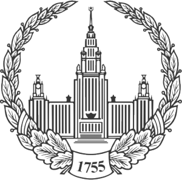
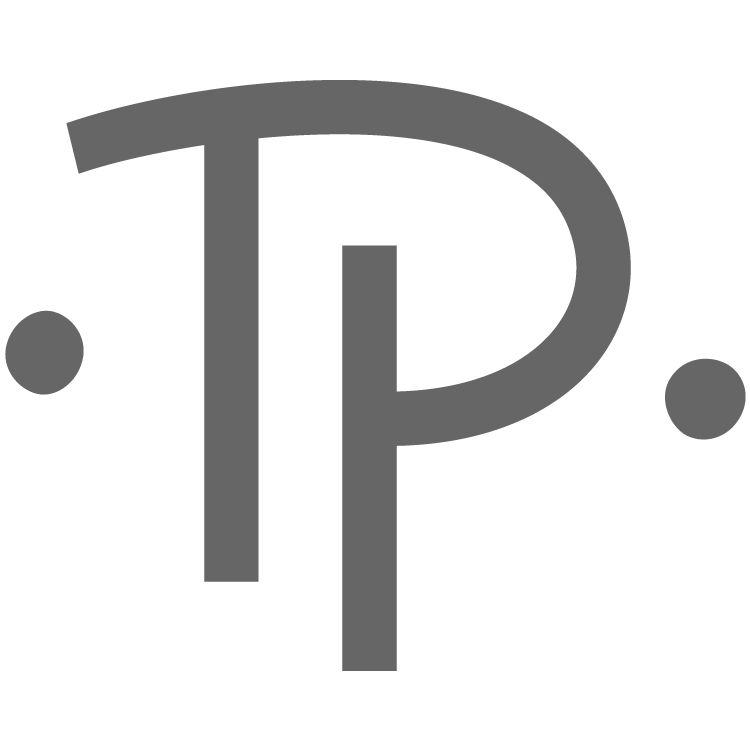

|  | |
|  | |
27 января - 1 февраля 2020 г., Москва
18 - 26 августа 2018 г., Самара
30 января - 4 февраля 2017 г., Москва
22 июня - 27 июня 2015 г., Самара
27 января - 1 февраля 2014 г., Москва
24 июня - 1 июля 2012 г., Тольятти
31 января – 5 февраля 2011 г., Москва
8 июня - 15 июня 2009 г., Самара
Независимый Московский Университет и Лаборатория им. Ж.-В. Понселе,
Лаборатория зеркальной симметрии и автоморфных форм НИУ ВШЭ
Расписание
| ПОНЕДЕЛЬНИК, 30 января | |||||
| 8:30 | – | 9:15 | 16-04 | Регистрация участников | |
| 9:15 | – | 9:30 | 16-10 | Открытие школы-конференции | |
| 9:30 | – | 10:30 | 16-10 | Э.Б. Винберг | «Неабелевы градуировки простых алгебр Ли», лекция 1 |
| 10:30 | – | 11:00 | 16-07 | Кофе-брейк | |
| 11:00 | – | 12:00 | 16-10 | В.А. Кириченко | «Многогранники Ньютона–Окунькова и представления классических групп», лекция 1 |
| 12:15 | – | 13:15 | 16-10 | Г.И. Ольшанский | «Асимптотическая теория характеров», лекция 1 |
| 13:15 | – | 15:00 | Обед | ||
| 15:00 | – | 15:40 | 16-10 | Г.А. Кошевой | «Комбинаторика канонических базисов и суперпотенциалы» |
| 15:50 | – | 16:30 | 16-10 | А.Н. Панов | «Алгебра Хопфа суперхарактеров треугольной группы» |
| 16:30 | – | 17:00 | 16-07 | Кофе-брейк | |
| 17:00 | – | 17:30 | 16-10 | В.В. Горбацевич | «Некоторые дополнения к классификации С. Ли действий групп Ли на поверхностях» |
| 16-08 | А.Н. Благовисная, О.А. Пихтилькова | «Разрешимость первичного радикала слабоартиновой алгебры Ли» | |||
| 17:40 | – | 18:00 | 16-10 | П. Зусманович | «Вариации на тему Адо» |
| 16-08 | Е.Е. Ширшова | «Идеалы частично упорядоченных линейных алгебр над полями» | |||
| 16-04 | Д.Д. Киселев | «Группы Галуа и оптимальное управление» | |||
| 18:05 | – | 18:25 | 16-10 | А.Д. Бережной | «Классификация отображений пространств со скалярным произведением» |
| 16-08 | Р.А. Лубков | «Надгруппы внешних степеней элементарной группы» | |||
| 16-04 | А.М. Павлов | «Групповой анализ спектральной задачи, порождённой колебаниями стержневой системы» | |||
| ВТОРНИК, 31 января | |||||
| 9:30 | – | 10:30 | 16-10 | В.А. Кириченко | «Многогранники Ньютона–Окунькова и представления классических групп», лекция 2 |
| 10:30 | – | 11:00 | 16-07 | Кофе-брейк | |
| 11:00 | – | 12:00 | 16-10 | Л.Г. Рыбников | «Комбинаторика и геометрия кристаллов Кашивары», лекция 1 |
| 12:15 | – | 13:15 | 16-10 | А.Н. Сергеев | «Полиномы Джека-Лорана при специальных значениях параметров» |
| 13:20 | Групповая фотография участников | ||||
| 13:30 | – | 15:00 | Обед | ||
| 15:00 | – | 15:40 | 16-10 | И.В. Аржанцев | «Бесконечная транзитивность и специальные автоморфизмы» |
| 15:50 | – | 16:30 | 16-10 | М.Х. Гизатуллин | «Открытые полуалгебраические действительные множества с транзитивными группами бирациональных преобразований» |
| 16:30 | – | 17:00 | 16-07 | Кофе-брейк | |
| 17:00 | – | 17:30 | 16-10 | Р.С. Авдеев | «Сферические действия на многообразиях флагов и правила ветвления для полупростых алгебраических групп» |
| 16-08 | И.Ю. Ждановский | «Коммутаторы проекторов и проективная геометрия» | |||
| 17:40 | – | 18:00 | 16-10 | А.В. Петухов | «Примитивные идеалы алгебры U(sl(\infty))» |
| 16-08 | Г.В. Воскресенская | «О числе классов сопряженных элементов» | |||
| 16-04 | Я.А. Верёвкин | «Полиэдральные произведения и коммутанты прямоугольной группы Коксетера и прямоугольной группы Артина» | |||
| 18:05 | – | 18:25 | 16-10 | В.Ю. Губарев | «Универсальные обёртывающие лиевые алгебры Рота-Бакстера прелиевых алгебр» |
| 16-04 | Н.В. Богачев | «Рефлективные анизотропные гиперболические решетки ранга 4» | |||
| 19:00 | Банкет | ||||
| СРЕДА, 1 февраля | |||||
| Заседания будут проходить в Независимом Московском университете (Большой Власьевский переулок, дом 11). | |||||
| 9:30 | – | 10:30 | Конф. зал | Э.Б. Винберг | «Неабелевы градуировки простых алгебр Ли», лекция 2 |
| 10:30 | – | 11:00 | 310 | Кофе-брейк | |
| 11:00 | – | 12:00 | Конф. зал | А.В. Степанов | «Редуктивные группы над кольцами», лекция 1 |
| 12:15 | – | 13:15 | Конф. зал | Г.И. Ольшанский | «Асимптотическая теория характеров», лекция 2 |
| 13:15 | – | 15:00 | Обед | ||
| 15:00 | – | 15:40 | Конф. зал | А.Н. Зубков | «Векторные инварианты некоторых простых исключительных групп над полем положительной характеристики» |
| 15:50 | – | 16:30 | Конф. зал | В.М. Гичев | «Свойство разделения в случае компактных групп, действующих в вещественных линейных пространствах» |
| 16:30 | – | 17:00 | 310 | Кофе-брейк | |
| 17:00 | – | 17:30 | Конф. зал | Е.Ю. Смирнов | «Особенности дивизоров на многообразиях флагов» |
| 307 | А.С. Кондратьев | «Усиленная версия гипотезы Симса о конечных примитивных группах подстановок» | |||
| 17:40 | – | 18:00 | Конф. зал | Д.В. Артамонов | «Единообразный подход к построению базисов типа Гельфанда-Цетлина для серий A, B, C, D» |
| 307 | М.В. Мещеряков | «О дифференциально-топологических свойствах матричных элементов неприводимых представлений связных компактных групп Ли» | |||
| 309 | В.С. Жгун | «Геометрия отображения моментов симплектических многообразий с инвариантными лагранжевыми подмногообразиями» | |||
| 18:05 | – | 18:25 | Конф. зал | И.И. Некрасов | «Грассманианы и другие однородные пространства, возникающие в симметрических плетизмах» |
| 307 | О.И. Кузнецова | «Инвариантное представление симметрий ОДУ второго порядка проективного типа» | |||
| 309 | В.Н. Сальников | «Градуированная геометрия в калибровочных теориях» | |||
| ЧЕТВЕРГ, 2 февраля | |||||
| Заседания будут проходить в Независимом Московском университете (Большой Власьевский переулок, дом 11). | |||||
| 9:30 | – | 10:30 | Конф. зал | А.В. Степанов | «Редуктивные группы над кольцами», лекция 2 |
| 10:30 | – | 11:00 | 310 | Кофе-брейк | |
| 11:00 | – | 12:00 | Конф. зал | Л.Г. Рыбников | «Комбинаторика и геометрия кристаллов Кашивары», лекция 2 |
| 12:15 | – | 13:15 | Конф. зал | Е.Б. Фейгин | «Вершины многогранников Винберга» |
| 13:15 | – | 15:00 | Обед | ||
| 15:00 | – | 15:40 | Конф. зал | Д.В. Осипов | «Вторые числа Чженя векторных расслоений на алгебраической поверхности и высшие адели» |
| 15:50 | – | 16:30 | Конф. зал | В.М. Петроградский | «Ниль супералгебры Ли медленного роста» |
| 16:30 | – | 17:00 | 310 | Кофе-брейк | |
| 17:00 | – | 17:30 | Конф. зал | М.А. Берштейн | «Плоские разбиения с "ямой": производящие функции и теория представлений» |
| 307 | А.Ю. Перепечко | «Группы автоморфизмов аффинных многообразий, состоящие из алгебраических элементов» | |||
| 17:40 | – | 18:00 | Конф. зал | В.В. Севостьянова | «Определяющие идеалы орбитальных многообразий» |
| 307 | С.А. Гайфуллин | «Автоморфизмы и изоморфизмы некоторых триномиальных гиперповерхностей» | |||
| 309 | С.С. Синчук | «О центральности K_2 для групп Шевалле» | |||
| 18:05 | – | 18:25 | Конф. зал | А.А. Гаража | «Об индексах Кронекера присоединённых операторов пары матриц» |
| 307 | Е.А. Ясинский | «Константа Жордана для плоской группы Кремоны» | |||
| 309 | П.Б. Гвоздевский, Д.А. Мамаев | «О надгруппах EO(2l-1,R) в SO(2l,R)» | |||
| ПЯТНИЦА, 3 февраля | |||||
| 9:30 | – | 10:30 | 16-10 | Л.Г. Рыбников | «Комбинаторика и геометрия кристаллов Кашивары», лекция 3 |
| 10:30 | – | 11:00 | 16-07 | Кофе-брейк | |
| 11:00 | – | 12:00 | 16-10 | А.В. Степанов | «Редуктивные группы над кольцами», лекция 3 |
| 12:15 | – | 13:15 | 16-10 | О.К. Шейнман | «Матричные дивизоры на римановых поверхностях» |
| 13:15 | – | 15:00 | Обед | ||
| 15:00 | – | 15:40 | 16-10 | А.Н. Красильников | «О лиевски нильпотентных ассоциативных алгебрах» |
| 15:50 | – | 16:30 | 16-10 | Д.В. Миллионщиков | «Естественно градуированные про-нильпотентные алгебры Ли ширины два» |
| 16:30 | – | 17:00 | 16-07 | Кофе-брейк | |
| 17:00 | – | 17:30 | 16-10 | М.В. Игнатьев | «Порядки на расстановках ладей, индуцированные примыканиями орбит» |
| 16-08 | В.А. Стукопин | «О связи янгианов супералгебр Ли и квантовых аффинных супералгебр» | |||
| 17:40 | – | 18:00 | 16-10 | А.А. Горницкий | «Существенные сигнатуры и канонические базисы неприводимых представлений B_n и D_n» |
| 16-08 | А.В. Попов | «Супералгебры Ли, разрешимые йордановы алгебры и их многообразия» | |||
| 16-04 | И.В. Нетай | «Треугольники Шарыгина» | |||
| 18:05 | – | 18:25 | 16-10 | А.А. Шевченко | «Центрально порождённые примитивные идеалы универсальных обёртывающих алгебр нильпотентных алгебр Ли» |
| 16-08 | Г.С. Мовсисян | «Оператор КМС типа B(1,1) и супералгебра Ли osp(3,2)» | |||
| 16-04 | А.Н. Трушин | «Группа автоморфизмов многообразий с обратимыми функциями» | |||
| СУББОТА, 4 февраля | |||||
| 9:30 | – | 10:30 | 16-10 | Э.Б. Винберг | «Неабелевы градуировки простых алгебр Ли», лекция 3 |
| 10:30 | – | 11:00 | 16-07 | Кофе-брейк | |
| 11:00 | – | 12:00 | 16-10 | В.А. Кириченко | «Многогранники Ньютона–Окунькова и представления классических групп», лекция 3 |
| 12:15 | – | 13:15 | 16-10 | Г.И. Ольшанский | «Асимптотическая теория характеров», лекция 3 |
| 13:15 | – | 13:30 | 16-10 | Закрытие школы-конференции | |